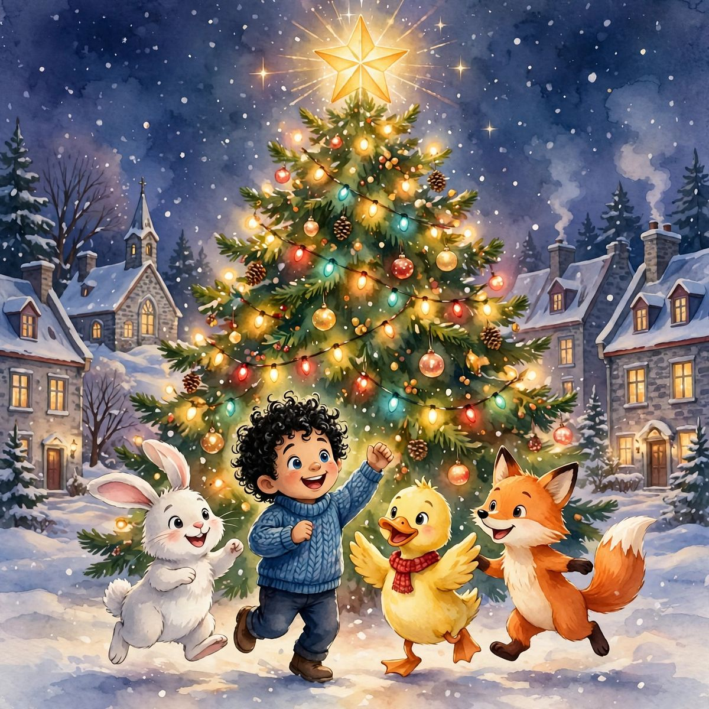

0:00
0:00
Prêt à écouter 🎧
📖 Page à lire ensemble — sans audio
Page 1 / 30
Le livre complet, offert gratuitement : lisez-le page par page et écoutez la narration avec ses effets sonores — les cloches, le vent, les pas dans la neige et le chant de l'oiseau.

Prêt à écouter 🎧
📖 Page à lire ensemble — sans audio
Envie d'autres histoires ? Découvrez tous les livres d'Adam et ses amis et les autres histoires gratuites.
⭐
Tu as aimé l'histoire de la petite étoile ? Crée ta propre carte-étoile : choisis un décor d'hiver avec Adam et ses amis, la couleur de ton étoile et un petit message — puis télécharge-la ou partage-la. Gratuit, et tout se fait sur ton appareil.
⭐ Créer mon étoile →